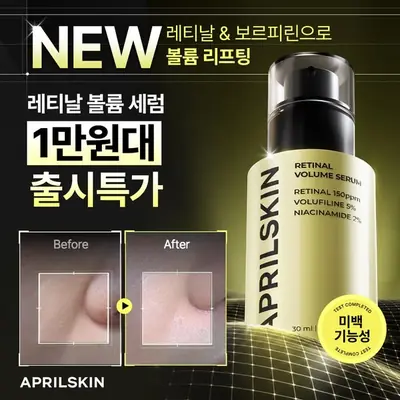
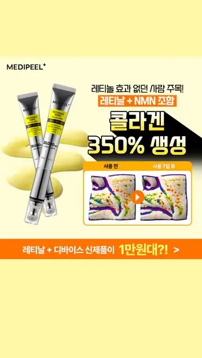
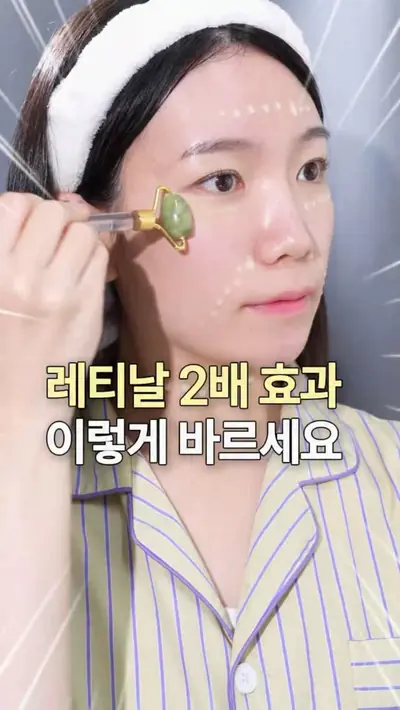
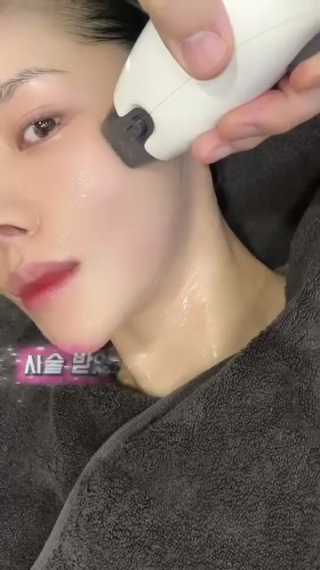

레티날 신제품 · 소재 방향 & 레퍼런스
중안부 고민에서 레티날 실로.
볼 꺼짐·땅콩형·팔자 고민을 중안부 탄력으로 묶고, 쭉 늘어나는 실타래 제형으로 연결합니다.
중심 소구중안부 탄력
→볼 꺼짐 · 땅콩형 · 팔자
확장 부위눈밑 · 눈가
- 레티날 0.1% 타이트닝 퍼밍크림
- 0.1%리포좀화 레티날 · 액티브 기준
- 타깃
- 4050 · 주름과 탄력 고민
- 제형
- 쭉 늘어나는 실타래 형태
- 컨셉
- 리프팅 실을 연상시키는 ‘레티날 실’
한눈에 보기
레티날12 표현 참고3 레티놀2
01
중안부고민 부위를 콕 집는 카피.
레티날레티날 & 보르피린초강력 레티날 침투팔자 & 모공 일타강사



02
눈가눈밑주름 · 눈가 탄력 · 붓기
레티날눈밑주름 전용눈가까지 챙겼나요?탄력은 채우고


03
시술·강조샷 · 주름 삭제 · 콜라겐 350%
레티날바르는 9만 샷고통스러운 시술 없이레티놀 효과 없던 사람



04
함량·도포함량을 크게, 도포는 구체적으로.
레티날주름은 싹레티날 2배 효과레티날 0.1%



05
눈밑지 표현“눈밑지 고민”으로 바로 시작.
표현 참고눈밑지 고민이신 분들눈밑지 시술수술까지 생각했었는데


06
레티놀성분 비교와 피부과급 표현.
레티놀레티날보다 효율 좋은레티놀보다 2.2배


글로우덤 연결 방향
고민 부위 → 레티날 실 → 주름·탄력 케어
- 보여줄 고민
중안부를 중심으로
볼 꺼짐 · 땅콩형 · 팔자
눈밑·눈가는 확장 방향 - 시각적 특징
쭉 늘어나는 제형
손끝에서 뽑히는 실타래 접사
고민 부위에 도포하는 장면 - 제품 정보
레티날 0.1%
리포좀화 레티날, 액티브 기준
4050 주름·탄력 크림
위 소구와 예시 소재를 참고해 레티날 신제품의 소재 방향성을 제안 부탁드립니다.